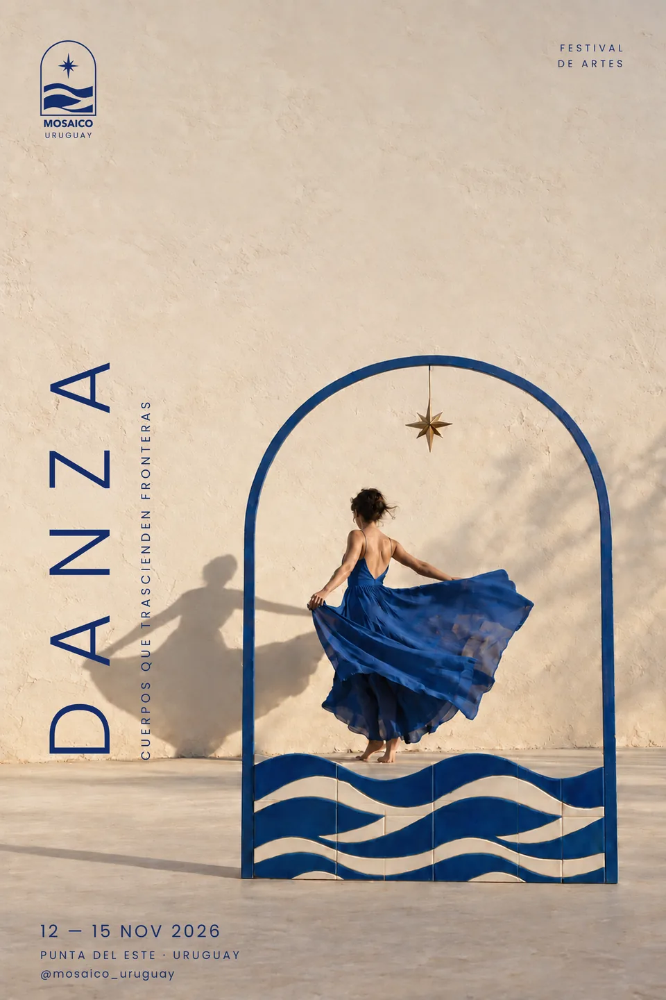
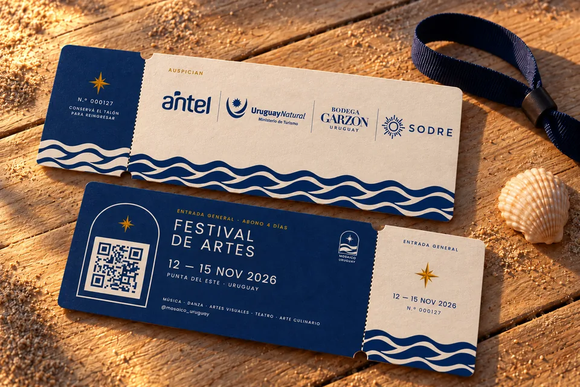
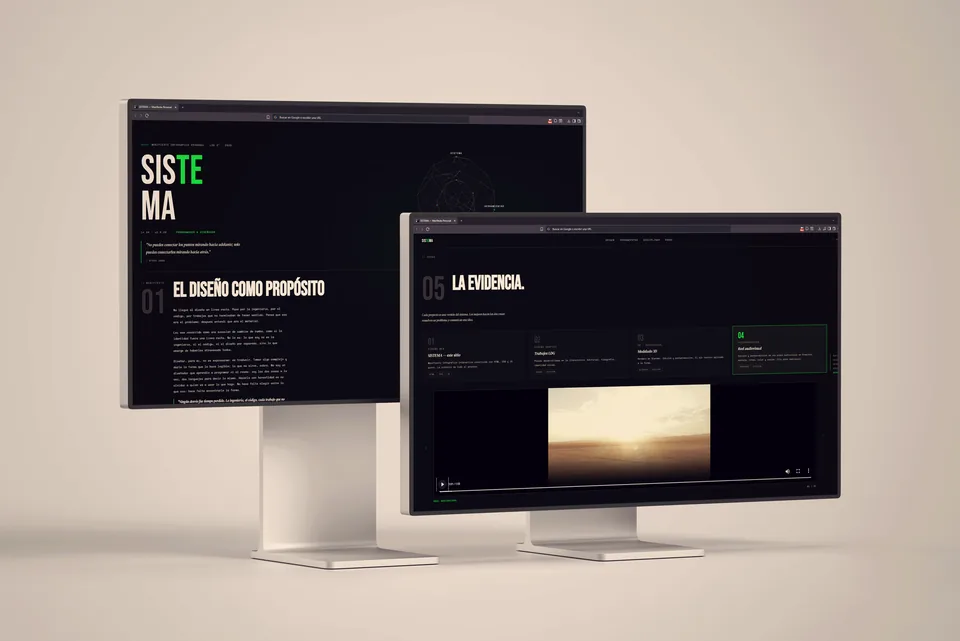
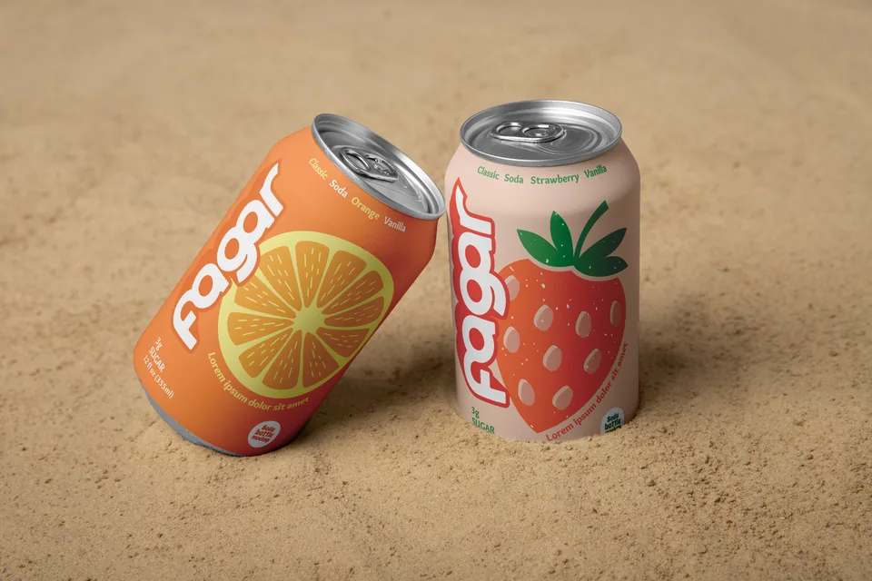
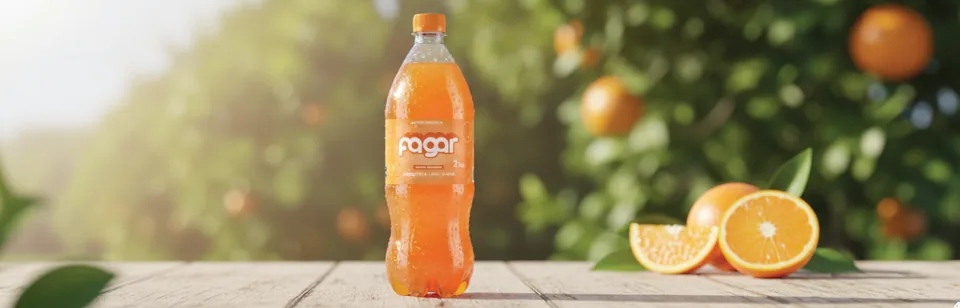
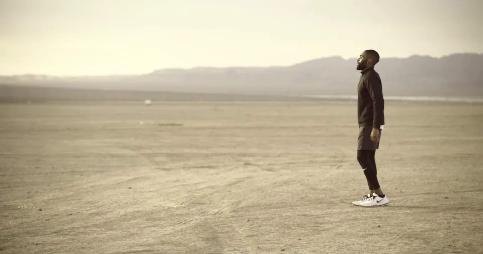

01 · 2026
Mosaico Uruguay
Identidad y sistema de piezas para un festival de artes en Punta del Este.
Festival ficticio de artes
Diseño gráfico · Carmelo, Uruguay


01 · 2026
Identidad y sistema de piezas para un festival de artes en Punta del Este.
Festival ficticio de artes
02 · 2026 En curso
Identidad y señalética para un museo de nueve espacios en Colonia del Sacramento. Por ahora, la etapa de investigación.
Proyecto final de 6.º semestre, UDE
03 · 2024
Una revista sobre las bodegas boutique de Uruguay.
Proyecto final de 2.º semestre, UDE

04 · 2026
Mi identidad personal en un sitio web: la trayectoria entre el código y el diseño.
Proyecto final de 5.º semestre, UDE


05 · 2025
Rediseño de una marca de refrescos de Colonia, nacida en 1947.
Proyecto final de 4.º semestre, UDE. Rediseño no oficial

 MC Panel
Conectando…
MC Panel
Conectando…
07 · 2026
Una app para manejar desde el celular el servidor de Minecraft de un grupo de amigos.
Proyecto personal
Soy diseñador gráfico y curso el tercer año de la Licenciatura en Diseño Gráfico en la UDE, en Colonia. Trabajo como freelance en identidades visuales, piezas editoriales y contenido para redes.
También soy Analista Programador, y programar es parte de cómo diseño. Además vengo de la edición audiovisual y del 3D.